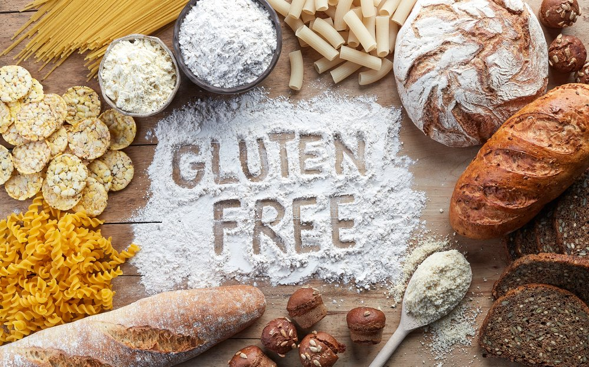
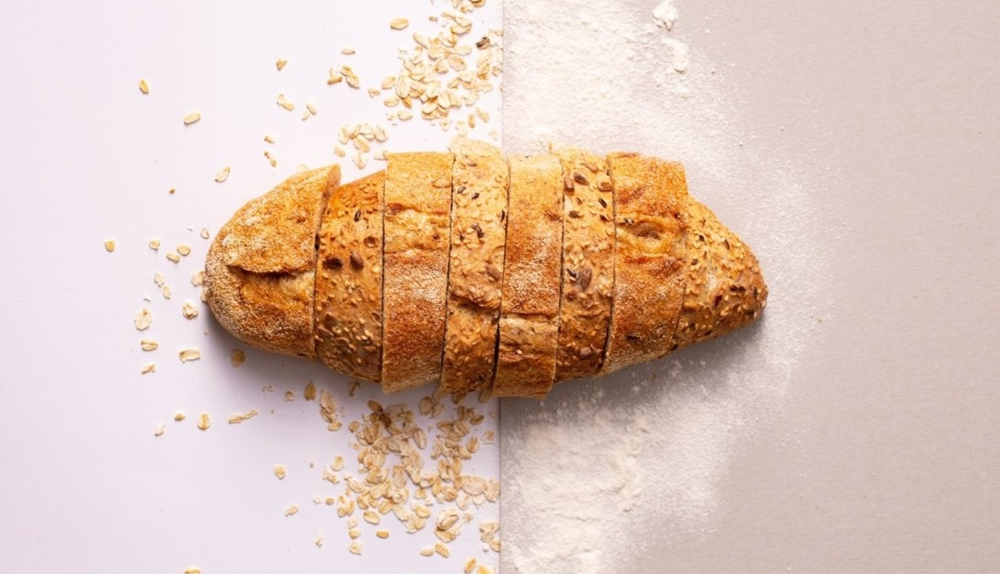

news
fashion
beauty
lifestyle
health
subscribe
Healthier without Wheat Since its publication a few years ago, there's still a steady stream of books to read. Dr. Wanggen, dedicated to digestive disorders and food allergies at the Swedish Medical Center in Washington, is the world's leading authority on gluten diseases. I'm the director of the North American Gluten Insomnia Group, and I've been working on a deep study of the health effects of food allergies. He treats countless patients for more than a decade and experiences clear health improvements for some people who haven't eaten any wheat or gluten. Everyone knows that flour is bad for you? I'm not talking about common sense about diet, skin care. Inconsistent flour intake can cause an enormous variety of diseases! What is the hidden truth of flour that people do not know?
First, Dr. Wanggen talks about the history of wheat."For nearly two million years, humans have eaten little grain, and wheat has virtually never eaten at all. It was only 10,000 years ago that we began to harvest hard and eat grain." 10,000 years ago, the body had to adapt and evolve. He goes on to figure out exactly why a diet that relies on wheat is dangerous to our bodies. Fruits and vegetables have made up a large part of mankind`s diet and contain phytocinucleic, which our bodies have come to rely on through millions of years of evolution. Pythotactic is a chemical that helps prevent antioxidant action or cell damage. By removing fruits and vegetables from the diet and filling the place with grain, we encountered various health problems that we had never experienced before. Not only that, but the ingredients needed to fight the disease have gradually disappeared from our bodies." Page 168
You can prevent 10 100 diseases by cutting off wheat flour. Chapter 1 Extracts from "Everything Hidden in Wheat." First of all, a person who has a negative reaction to flour can be seen as responding to a protein called gluten contained in wheat. So who should avoid this gluten? And of course, they're people suffering from gluten But the problem is that even if you suffer from gluten intolerance, the symptoms are often not immediately apparent. And the symptoms of gluten intolerance are subtle and varied enough to determine the cause. About 200 problems can appear as symptoms related to digestion, skin, emotions, nerves, and autoimmune disease, specifically abdominal pain, diarrhea, acne, dermatitis, weight loss, menstrual irregularity, colon cancer, etc. How does gluten intake cause so many diseases? He says if gluten is not fit, it can lead to poor nutrient absorption, inflammation and immune responses throughout the body. Infants and children can also suffer from severe symptoms. Then, what is the treatment? There are no sharp tricks or expedients. It's the only way to avoid wheat or gluten. In this book, she details exactly what foods contain gluten, how she identifies her symptoms, what she must avoid, and how it can help her recover. What about flour food? What if I'm not feeling well these days? Steven Wanggen's "One Hundred Diseases Can Be Stopped" is a book that makes sure I'm not gluten-resistant.
It was written by Sunhwa
Reference : Vogue
If you love this article, subscribe today! You can subscribe in online
Write your review